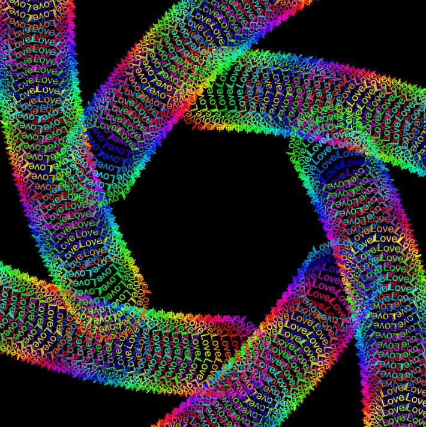
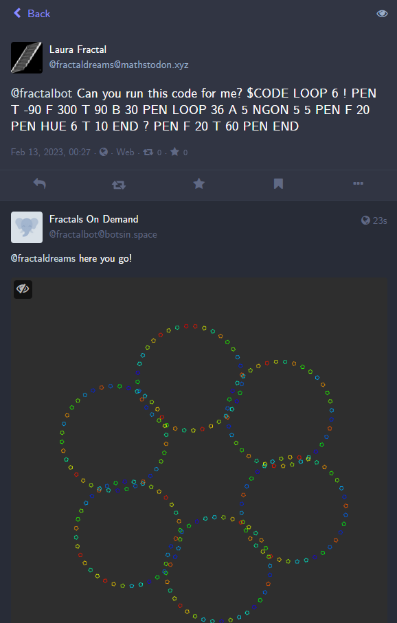
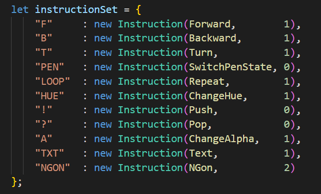

A mastodon Bot that can execute LOGO like programs on the server using node.js
An example of an image, that the bot can create
An example of a message mentioning the bot. It replied with the image that the code describes
The instruction set of the bot, the integers describe the number of inputs the instruction takes